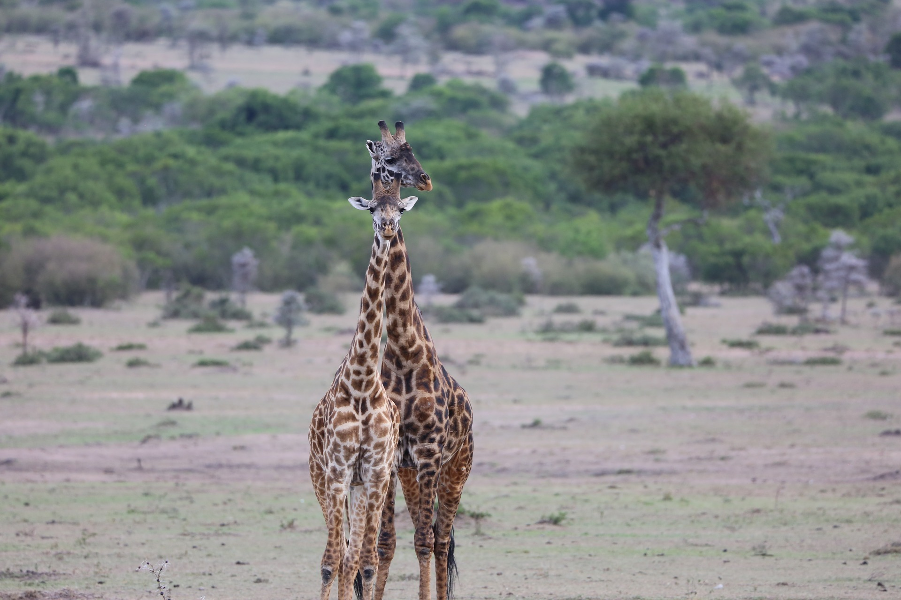
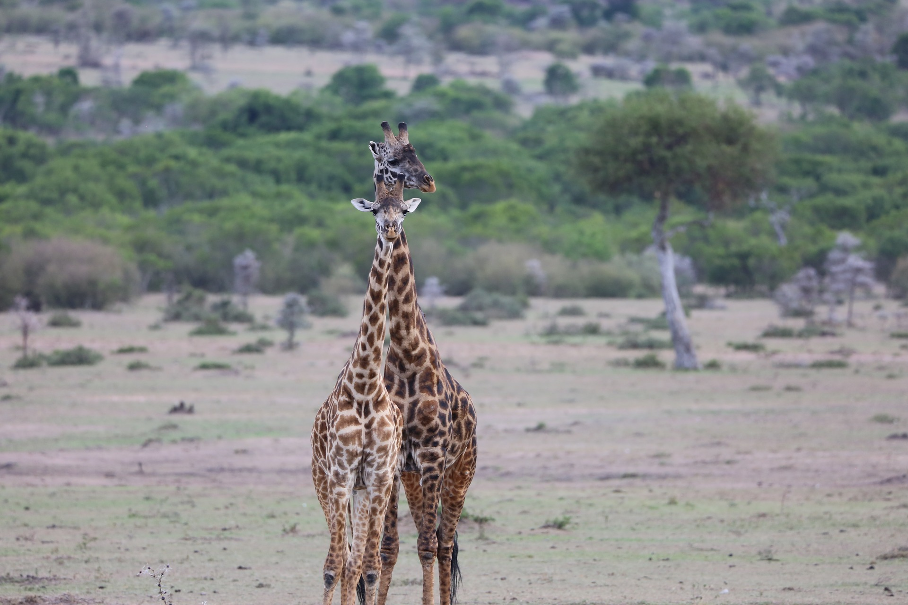

Kenya - the name is almost synonymous with the word "safari." Few other places on the planet conjure such a spirit of adventure and romance. The diversity of things to do in Kenya dazzles all who visit, and viewing the country's abundant wildlife
tops the list.
See throngs of wildebeest thundering across the savanna during the Great Migration in the Maasai Mara; come eye-to-eye with elephants in Amboseli; or marvel at Lake Nakuru, flecked with thousands of flamingos. In these sun-soaked lands,
ancient tribes, such as the Maasai, Kikuyu, and Samburu, retain their traditional customs, living in relative harmony with the natural world.
 
